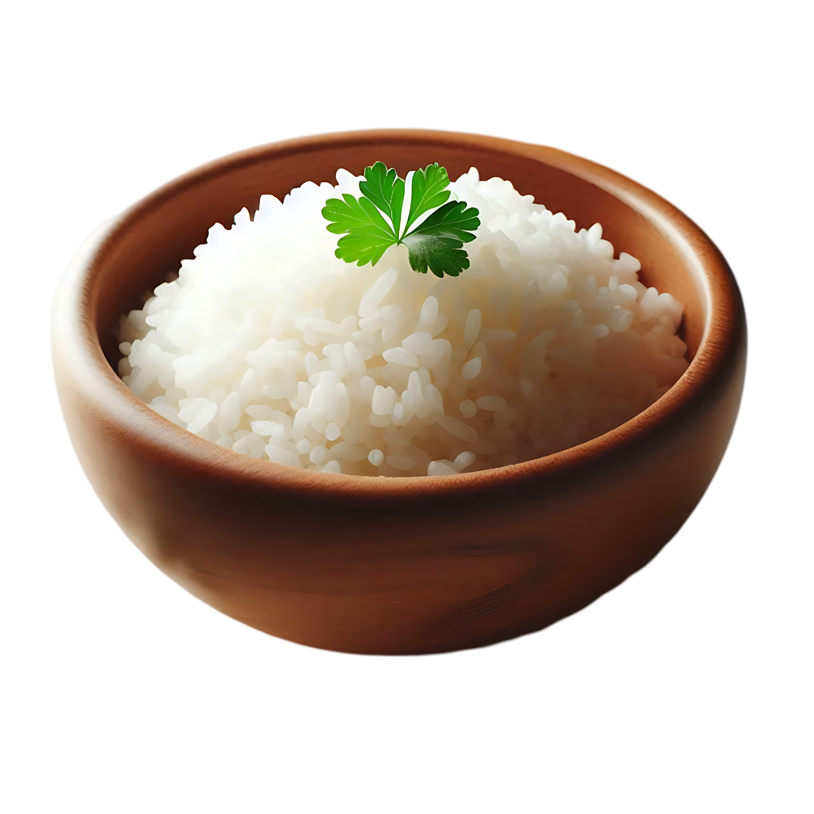

wooden bowl PNG Designed By from https://pngtree.com/freepng/a-wooden-bowl-filled-with-fluffy-white-rice-topped-single-green-cilantro-leaf_20854860.html?sol=downref&id=bef
Simple rice recipe
Heat oil in a nonstick saucepan over medium-high heat until almost smoking. Add rice; cook and stir quickly to toast, 2 to 3 minutes. Add onions and sauté for 1 minute.
Stir in broth and garlic salt; bring to a boil. Reduce the heat to low, cover, and cook until liquid is absorbed and rice is tender, about 20 minutes. Remove from the heat and allow to rest for 5 minutes. Uncover and fluff with a fork.